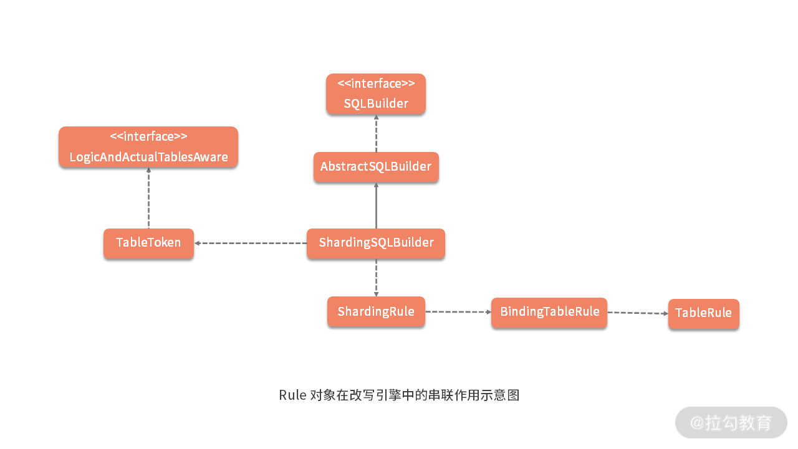

20 改写引擎：如何理解装饰器模式下的 SQL 改写实现机制？¶
回想在“17 | 路由引擎：如何理解分片路由核心类 ShardingRouter 的运作机制？”课时中，我们在 BaseShardingEngine 的 Shard 方法中看到了 ShardingSphere 中另一个重要的概念，即 SQL 改写（Rewrite）。
SQL 改写 在分库分表框架中通常位于路由之后，也是整个 SQL 执行流程中的重要环节，因为开发人员是面向逻辑库与逻辑表所书写的 SQL，并不能够直接在真实的数据库中执行，SQL 改写，用于将逻辑 SQL 改写为在真实数据库中可以正确执行的 SQL。
事实上，我们已经在前面的案例中看到了 SQL 改写的应用场景，这个场景就是分布式主键的自动生成过程。在关系型数据库中，自增主键 是常见的功能特性，而对于 ShardingSphere 而言，这也是 SQL 改写的典型应用场景。
今天，我们就将基于自增主键这一场景来探讨 ShardingSphere 中 SQL 改写的实现过程。
ShardingSphere 改写引擎基本结构¶
让我们先来看一下 BaseShardingEngine 中，用于执行改写逻辑的 rewriteAndConvert 方法：
private Collection<RouteUnit> rewriteAndConvert(final String sql, final List<Object> parameters, final SQLRouteResult sqlRouteResult) {
//构建 SQLRewriteContext
SQLRewriteContext sqlRewriteContext = new SQLRewriteContext(metaData.getRelationMetas(), sqlRouteResult.getSqlStatementContext(), sql, parameters);
//构建 ShardingSQLRewriteContextDecorator 对 SQLRewriteContext 进行装饰
new ShardingSQLRewriteContextDecorator(shardingRule, sqlRouteResult).decorate(sqlRewriteContext);
//判断是否根据数据脱敏列进行查询
boolean isQueryWithCipherColumn = shardingProperties.<Boolean>getValue(ShardingPropertiesConstant.QUERY_WITH_CIPHER_COLUMN);
//构建 EncryptSQLRewriteContextDecorator 对 SQLRewriteContext 进行装饰
new EncryptSQLRewriteContextDecorator(shardingRule.getEncryptRule(), isQueryWithCipherColumn).decorate(sqlRewriteContext);
//生成 SQLTokens
sqlRewriteContext.generateSQLTokens();
Collection<RouteUnit> result = new LinkedHashSet<>();
for (RoutingUnit each : sqlRouteResult.getRoutingResult().getRoutingUnits()) {
//构建 ShardingSQLRewriteEngine
ShardingSQLRewriteEngine sqlRewriteEngine = new ShardingSQLRewriteEngine(shardingRule, sqlRouteResult.getShardingConditions(), each);
//执行改写
SQLRewriteResult sqlRewriteResult = sqlRewriteEngine.rewrite(sqlRewriteContext);
//保存改写结果
result.add(new RouteUnit(each.getDataSourceName(), new SQLUnit(sqlRewriteResult.getSql(), sqlRewriteResult.getParameters())));
}
return result;
}
这段代码虽然内容不多，但却完整描述了实现 SQL 改写的整体流程，我们对核心代码都添加了注释，这里面涉及的 核心类 也很多，值得我们进行深入分析，相关核心类的整体结构如下：
{kind=link}
可以看到在整个类图中，SQLRewriteContext 处于中间位置，改写引擎 SQLRewriteEngine 和装饰器 SQLRewriteContextDecorator 都依赖于它。
所以接下来，让我们先来看一下这个 SQLRewriteContext，并基于自增主键功能引出 SQL 改写引擎的基础组件 SQLToken。
从自增主键功能看改写引擎中的核心类¶
1. SQLRewriteContext¶
从命名上讲，与 SQLStatementContext 类似，SQLRewriteContext 也是一个上下文对象，让我们来看 SQLRewriteContext 中的变量定义：
//数据表和列的关系元数据
private final RelationMetas relationMetas;
//SQLStatement 上下文
private final SQLStatementContext sqlStatementContext;
//原始SQL
private final String sql;
//参数列表
private final List<Object> parameters;
//SQLToken 列表
private final List<SQLToken> sqlTokens = new LinkedList<>();
//参数构建器
private final ParameterBuilder parameterBuilder;
//SQLToken 生成器
private final SQLTokenGenerators sqlTokenGenerators = new SQLTokenGenerators();
在这里，我们看到了前面已经介绍的 SQLStatementContext，也看到了新的 SQLToken 和 SQLTokenGenerators。随着今天内容的演进，这些对象都会逐一进行介绍，这里我们先明确 SQLRewriteContext 中保存着用于 SQL 改写的各种相关信息。
2. SQLToken¶
接下来，我们来看一下 SQLToken 对象，该对象在改写引擎中重要性很高，SQLRewriteEngine 正是基于 SQLToken 实现了 SQL 改写，SQLToken 类的定义如下所示：
@RequiredArgsConstructor
@Getter
public abstract class SQLToken implements Comparable<SQLToken> {
private final int startIndex;
@Override
public final int compareTo(final SQLToken sqlToken) {
return startIndex - sqlToken.getStartIndex();
}
}
SQLToken 实际上是一个抽象类，在 ShardingSphere 中，存在了一大批 SQLToken 的子类。这些 SQLToken 多数跟 SQL 改写相关（这部分类的包名中包含 rewrite）；而有些在改写的基础上还与后面要讲到的数据脱敏功能相关（这部分类包名中还包含着 encrypt）。
数据脱敏也是 ShardingSphere 提供的一项非常实用的功能，我们在讲到“模块六：ShardingSphere 源码解析之治理与集成”时会有专题对其进行介绍。
同时，部分 SQLToken 位于 shardingsphere-rewrite-engine 工程中，而有些则位于 sharding-core-rewrite 工程中，这点也需要注意。
结合 SQL 改写的常见场景，很多 SQLToken 的含义可以从字面意思上直接理解。例如，对 INSERT 语句而言，如果使用数据库自增主键，是不需要写入主键字段的，但数据库的自增主键无法满足分布式场景下的主键唯一性，因此 ShardingSphere 提供了分布式自增主键的生成策略，能够自动地替换数据库现有的自增主键。
举例说明，我们案例中 health_record 表的主键是 record_id，假定原始的 SQL 为：
可以看到，上述 SQL 中并未包含自增主键，需要数据库自行填充，在 ShardingSphere 中配置了自增主键后，SQL 将被自动改写为：
INSERT INTO health_record (record_id, user_id, level_id, remark) values ("471698773731577856", 1, 1, "Remark1")
显然，改写后的 SQL 将在 INSERT 语句中增加主键列名称，以及自动生成的自增主键值。
从命名上看，GeneratedKeyInsertColumnToken 对应上述的自动主键填充的场景，这实际上属于常见的一种 SQL 改写策略，也就是补列，GeneratedKeyInsertColumnToken 的实现如下所示：
public final class GeneratedKeyInsertColumnToken extends SQLToken implements Attachable {
private final String column;
public GeneratedKeyInsertColumnToken(final int startIndex, final String column) {
super(startIndex);
this.column = column;
}
@Override
public String toString() {
return String.format(", %s", column);
}
}
注意到这里多了一个 column 变量用于指定主键的所在列。我们再来跟踪 GeneratedKeyInsertColumnToken 的构造函数调用情况，发现这个类是通过 GeneratedKeyInsertColumnTokenGenerator 创建出来的。
接下来，让我们一起看看 TokenGenerator。
3. TokenGenerator¶
顾名思义，TokenGenerator 的作用是专门负责生成具体的 Token，该接口定义如下：
public interface SQLTokenGenerator {
//判断是否要生成 SQLToken
boolean isGenerateSQLToken(SQLStatementContext sqlStatementContext);
}
该接口还有两个子接口，分别是负责生成单个 SQLToken 的 OptionalSQLTokenGenerator 和负责生成批量 SQLToken 的 CollectionSQLTokenGenerator：
public interface OptionalSQLTokenGenerator extends SQLTokenGenerator {
//生成单个 SQLToken
SQLToken generateSQLToken(SQLStatementContext sqlStatementContext);
}
public interface CollectionSQLTokenGenerator extends SQLTokenGenerator {
//生成批量 SQLToken
Collection<? extends SQLToken> generateSQLTokens(SQLStatementContext sqlStatementContext);
}
在 ShardingSphere，和 SQLToken 一样，TokenGenerator 的类层结构也比较复杂。对于 GeneratedKeyInsertColumnTokenGenerator 而言，它还有一个抽象的基类，即如下所示的 BaseGeneratedKeyTokenGenerator：
public abstract class BaseGeneratedKeyTokenGenerator implements OptionalSQLTokenGenerator, SQLRouteResultAware {
//是否生成 SQLToken
protected abstract boolean isGenerateSQLToken(InsertStatement insertStatement);
//生成 SQLToken
protected abstract SQLToken generateSQLToken(SQLStatementContext sqlStatementContext, GeneratedKey generatedKey);
…
}
这个抽象类留下了两个模板方法 isGenerateSQLToken 和 generateSQLToken，交由子类进行实现，在 GeneratedKeyInsertColumnTokenGenerator 中提供了这两个方法的实现过程：
public final class GeneratedKeyInsertColumnTokenGenerator extends BaseGeneratedKeyTokenGenerator {
@Override
protected boolean isGenerateSQLToken(final InsertStatement insertStatement) {
Optional<InsertColumnsSegment> sqlSegment = insertStatement.findSQLSegment(InsertColumnsSegment.class);
return sqlSegment.isPresent() && !sqlSegment.get().getColumns().isEmpty();
}
@Override
protected GeneratedKeyInsertColumnToken generateSQLToken(final SQLStatementContext sqlStatementContext, final GeneratedKey generatedKey) {
Optional<InsertColumnsSegment> sqlSegment = sqlStatementContext.getSqlStatement().findSQLSegment(InsertColumnsSegment.class);
Preconditions.checkState(sqlSegment.isPresent());
//构建 GeneratedKeyInsertColumnToken
return new GeneratedKeyInsertColumnToken(sqlSegment.get().getStopIndex(), generatedKey.getColumnName());
}
}
我们看到在上述 generateSQLToken 方法中，通过利用在 SQL 解析引擎中获取的 InsertColumnsSegment 以及从用于生成分布式主键的 GeneratedKey 中获取对应的主键列，我们就可以构建一个 GeneratedKeyInsertColumnToken。
装饰器 SQLRewriteContextDecorator¶
现在，既然已经获取了 SQLToken，让我们再次回到前面提到的 SQLRewriteContext。我们知道 SQLRewriteContext 是一个上下文对象，保存着与 SQL 改写相关的很多数据信息，同时对于这些信息，其构建过程会根据不同的应用场景而有所不同。基于这些应用场景，ShardingSphere 的改写引擎提供了 SQLRewriteContextDecorator 接口：
public interface SQLRewriteContextDecorator {
//对SQLRewriteContext 执行装饰
void decorate(SQLRewriteContext sqlRewriteContext);
}
顾名思义，SQLRewriteContextDecorator 是一种装饰器模式的具体应用，在 ShardingSphere 中只存在两种具体的 SQLRewriteContextDecorator：一种是用于分片处理的 ShardingSQLRewriteContextDecorator，一种是用于数据脱敏的 EncryptSQLRewriteContextDecorator，我们将在“30 | 数据脱敏：如何基于改写引擎实现低侵入性数据脱敏方案？”中进行详细介绍。今天，我们关注的是前一种 ShardingSQLRewriteContextDecorator 的实现过程：
public final class ShardingSQLRewriteContextDecorator implements SQLRewriteContextDecorator {
private final ShardingRule shardingRule;
private final SQLRouteResult sqlRouteResult;
@Override
public void decorate(final SQLRewriteContext sqlRewriteContext) {
//参数改写
for (ParameterRewriter each : new ShardingParameterRewriterBuilder(shardingRule, sqlRouteResult).getParameterRewriters(sqlRewriteContext.getRelationMetas())) {
if (!sqlRewriteContext.getParameters().isEmpty() && each.isNeedRewrite(sqlRewriteContext.getSqlStatementContext())) {
each.rewrite(sqlRewriteContext.getParameterBuilder(), sqlRewriteContext.getSqlStatementContext(), sqlRewriteContext.getParameters());
}
}
//SQLTokenGenerators 初始化
sqlRewriteContext.addSQLTokenGenerators(new ShardingTokenGenerateBuilder(shardingRule, sqlRouteResult).getSQLTokenGenerators());
}
}
这段代码不长，包含了两部分内容：一个是参数改写，另一个是 SQLTokenGenerators 初始化，下面我将分别讲解：
1. 参数改写¶
参数改写部分又引入了几个新类。首当其冲的是 ParameterRewriter 以及构建它的 ParameterRewriterBuilder。（1）ParameterRewriter 我们先来看 ParameterRewriter 的定义：
public interface ParameterRewriter {
//判断是否需要改写
boolean isNeedRewrite(SQLStatementContext sqlStatementContext);
//执行参数改写
void rewrite(ParameterBuilder parameterBuilder, SQLStatementContext sqlStatementContext, List<Object> parameters);
}
基于自增主键功能，这里以 ShardingGeneratedKeyInsertValueParameterRewriter 为例看一下 ParameterRewriter 的实现方式，它的 isNeedRewrite 方法如下所示：
@Override
public boolean isNeedRewrite(final SQLStatementContext sqlStatementContext) {
return sqlStatementContext instanceof InsertSQLStatementContext && sqlRouteResult.getGeneratedKey().isPresent() && sqlRouteResult.getGeneratedKey().get().isGenerated();
}
显然，输入的 SQL 应该是一种 InsertSQLStatement，并且只有在路由结果已经包含了 GeneratedKey 的情况下才执行这种改写。（2）ParameterRewriterBuilder 在介绍 rewrite 方法之前，我们先来理解 ParameterBuilder 的概念，ParameterBuilder 是一种参数构建器：
ParameterBuilder 有两个实现类：分别是 StandardParameterBuilder 和 GroupedParameterBuilder。其中，GroupedParameterBuilder 保存着 StandardParameterBuilder 的一个集合，只适用于 InsertSQLStatement。
了解了这层关系之后，我们再来看 ShardingGeneratedKeyInsertValueParameterRewriter 的 rewrite 方法：
@Override
public void rewrite(final ParameterBuilder parameterBuilder, final SQLStatementContext sqlStatementContext, final List<Object> parameters) {
Preconditions.checkState(sqlRouteResult.getGeneratedKey().isPresent());
((GroupedParameterBuilder) parameterBuilder).setDerivedColumnName(sqlRouteResult.getGeneratedKey().get().getColumnName());
Iterator<Comparable<?>> generatedValues = sqlRouteResult.getGeneratedKey().get().getGeneratedValues().descendingIterator();
int count = 0;
int parametersCount = 0;
for (List<Object> each : ((InsertSQLStatementContext) sqlStatementContext).getGroupedParameters()) {
parametersCount += ((InsertSQLStatementContext) sqlStatementContext).getInsertValueContexts().get(count).getParametersCount();
Comparable<?> generatedValue = generatedValues.next();
if (!each.isEmpty()) {
//使用 GroupedParameterBuilder 进行补列和设置参数
((GroupedParameterBuilder) parameterBuilder).getParameterBuilders().get(count).addAddedParameters(parametersCount, Lists.<Object>newArrayList(generatedValue));
}
count++;
}
}
因为这个 ParameterRewriter 面向 InsertSQLStatement，所以这里用到了 GroupedParameterBuilder，并通过 SQLRouteResult 获取 GeneratedKey。我们设置了 GroupedParameterBuilder 中的 DerivedColumnName 为 GeneratedKey 的主键 Column，并通过一个循环添加了对应的 Index 和 Parameter，也就是完成了所需的补列操作。
这部分的操作实际上可以与 GeneratedKey 的生成过程结合起来一起看以便加深理解，在 [“14 | 分布式主键：ShardingSphere 中有哪些分布式主键实现方式？”]课时中提到的 createGeneratedKey 方法也是通过一个循环对 GeneratedKey 进行赋值。
private static GeneratedKey createGeneratedKey(final ShardingRule shardingRule, final InsertStatement insertStatement, final String generateKeyColumnName) {
GeneratedKey result = new GeneratedKey(generateKeyColumnName, true);
for (int i = 0; i < insertStatement.getValueListCount(); i++) {
result.getGeneratedValues().add(shardingRule.generateKey(insertStatement.getTable().getTableName()));
}
return result;
}
2. SQLTokenGenerator 初始化¶
上文内容我们关注 ShardingSQLRewriteContextDecorator 中使用 ParameterRewriter 进行 参数改写 的过程，这是 decorate 方法中的第一部分内容。
接下来我们继续讲解该方法的第二部分内容，即 为 SQLRewriteContext 添加 SQLTokenGenerator ：
//SQLTokenGenerators 初始化
sqlRewriteContext.addSQLTokenGenerators(new ShardingTokenGenerateBuilder(shardingRule, sqlRouteResult).getSQLTokenGenerators());
这句代码关注于 SQLTokenGenerator 的创建，所以出现了一个 ShardingTokenGenerateBuilder：
public interface SQLTokenGeneratorBuilder {
//获取 SQLTokenGenerator 列表
Collection<SQLTokenGenerator> getSQLTokenGenerators();
}
在 SQLTokenGeneratorBuilder 的实现类 ShardingTokenGenerateBuilder 中，可以看到内置了很多 TokenGenerator，包含我们在前面提到过的 GeneratedKeyInsertColumnTokenGenerator：
private Collection<SQLTokenGenerator> buildSQLTokenGenerators() {
Collection<SQLTokenGenerator> result = new LinkedList<>();
addSQLTokenGenerator(result, new TableTokenGenerator());
…
addSQLTokenGenerator(result, new OffsetTokenGenerator());
addSQLTokenGenerator(result, new RowCountTokenGenerator());
addSQLTokenGenerator(result, new GeneratedKeyInsertColumnTokenGenerator());
…
return result;
}
改写引擎 SQLRewriteEngine¶
在 ShardingSphere 中，SQLRewriteEngine 接口代表了改写引擎的入口：
public interface SQLRewriteEngine {
//基于 SQLRewriteContext 执行 SQL 改写
SQLRewriteResult rewrite(SQLRewriteContext sqlRewriteContext);
}
SQLRewriteEngine 接口只有一个方法，即根据输入的 SQLRewriteContext 返回一个 SQLRewriteResult 对象。我们通过前面的介绍已经了解到，可以通过装饰器类对 SQLRewriteContext 进行装饰，从而满足不同场景的需要。
注意到 SQLRewriteEngine 接口只有两个实现类：分别是 DefaultSQLRewriteEngine 和 ShardingSQLRewriteEngine。我们重点关注 ShardingSQLRewriteEngine，但在介绍这个改写引擎类之前，我们先要介绍一下 SQLBuilder 接口，从定义上可以看出 SQLBuilder 的目的就是构建最终可以执行的 SQL 语句：
SQLBuilder 接口有一个抽象的实现类 AbstractSQLBuilder，它的 toSQL 方法如下所示：
@Override
public final String toSQL() {
if (context.getSqlTokens().isEmpty()) {
return context.getSql();
}
Collections.sort(context.getSqlTokens());
StringBuilder result = new StringBuilder();
result.append(context.getSql().substring(0, context.getSqlTokens().get(0).getStartIndex()));
//根据 SQLToken 拼装目标 SQL
for (SQLToken each : context.getSqlTokens()) {
result.append(getSQLTokenText(each));
result.append(getConjunctionText(each));
}
return result.toString();
}
可以看到，如果 SQLRewriteContext 的 sqlTokens 为空，就直接返回保存在 SQLRewriteContext 中的最终 SQL；反之，会构建一个保存 SQL 的 StringBuilder，然后依次添加每个 SQLTokenText 以及连接词 ConjunctionText，从而拼装成一个完整的 SQL 语句。注意到，这里获取 SQLTokenText 的方法是一个模板方法，需要 AbstractSQLBuilder 的子类进行实现：
作为 AbstractSQLBuilder 的一个实现类，ShardingSQLBuilder 的 getSQLTokenText 方法就包含了 SQL 改写的一些场景：
if (sqlToken instanceof RoutingUnitAware) { return ((RoutingUnitAware) sqlToken).toString(routingUnit); } if (sqlToken instanceof LogicAndActualTablesAware) { return ((LogicAndActualTablesAware) sqlToken).toString(getLogicAndActualTables()); } return sqlToken.toString();
对于输入的 SQLToken，这里有两个特殊的处理，即判断是否实现了 RoutingUnitAware 接口或 LogicAndActualTablesAware 接口。我们发现实现 RoutingUnitAware 接口的只有 ShardingInsertValuesToken；而实现 LogicAndActualTablesAware 的则有 IndexToken 和 TableToken 两个 SQLToken。 这里以实现了 LogicAndActualTablesAware 的 TableToken 为例展开讨论。表名改写 就是将逻辑表名改写为真实表名的过程，是一个典型的需要对 SQL 进行改写的场景。我们考虑最简单表名改写场景，如果逻辑 SQL 为：
那么，这里的逻辑表名为 user。假设我们配置了分片键 user_id，并且 user_id = 1 的情况，将路由至分片表 user_1，那么改写之后的 SQL 应该为：
可以看到这里的真实表名应该是 user_1 而不是 user，在用于改写表名的 TableToken 中，它的 toString 如下所示：
String actualTableName = logicAndActualTables.get(tableName.toLowerCase()); actualTableName = null == actualTableName ? tableName.toLowerCase() : actualTableName; return Joiner.on("").join(quoteCharacter.getStartDelimiter(), actualTableName, quoteCharacter.getEndDelimiter());
这里的逻辑并不复杂，只是根据逻辑表名从 logicAndActualTables 中获取真实表名 actualTableName，然后进行字符串拼装而已。那么这个 logicAndActualTables 是从何而来呢？logicAndActualTables 的构建过程是在 ShardingSQLBuilder 中：
Map
上述代码实际上也只是做了数据结构的拼装，我们沿着这里的 getLogicAndActualTablesFromBindingTable 方法继续往下看，会发现根据 logicTable 获取 actualTable 的过程实际上是发生在 BindingTableRule 中：
public String getBindingActualTable(final String dataSource, final String logicTable, final String otherActualTable) {
int index = -1; for (TableRule each : tableRules) { index = each.findActualTableIndex(dataSource, otherActualTable); if (-1 != index) { break; } } if (-1 == index) { throw new ShardingConfigurationException("Actual table [%s].[%s] is not in table config", dataSource, otherActualTable); } for (TableRule each : tableRules) { if (each.getLogicTable().equals(logicTable.toLowerCase())) { return each.getActualDataNodes().get(index).getTableName().toLowerCase(); } } throw new ShardingConfigurationException("Cannot find binding actual table, data source: %s, logic table: %s, other actual table: %s", dataSource, logicTable, otherActualTable);
而 BindingTableRule 又依赖于 TableRule 中保存的 ActualDataNodes 来完成 ActualTableIndex 和 ActualTable 的计算。回想起我们在案例中配置的分库分表规则，这里再次感受到了以 TableRule 和 BindingTableRule 为 代表的各种 Rule 对象在 ShardingSphere 的串联作用：  当 ShardingSQLBuilder 完成 SQL 的构建之后，我们再回到 ShardingSQLRewriteEngine，这个时候我们对它的 rewrite 方法就比较明确了：
{kind=link}
return new SQLRewriteResult(new ShardingSQLBuilder(sqlRewriteContext, shardingRule, routingUnit).toSQL(), getParameters(sqlRewriteContext.getParameterBuilder()));
改写引擎的输出 SQLRewriteResult 对象就包含了最终的 SQL 以及配套的参数列表：
private final String sql; private final List